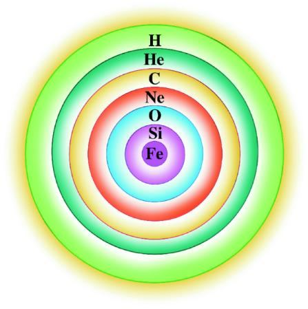
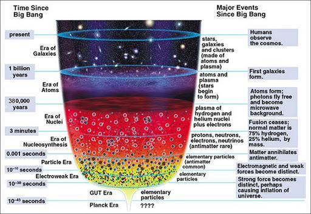
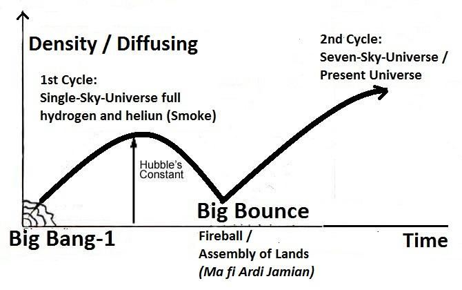
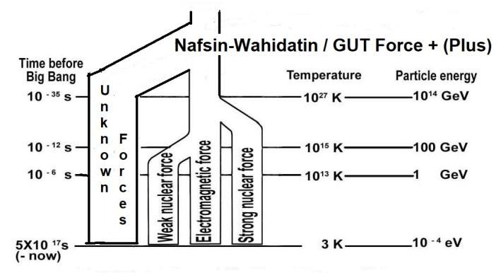

8. Formation of Skies and Galaxies
8. আকাশ এবং ছায়াপথের গঠন
The smoke evolved from the Big Bang got together into the clouds of gas. In the collapsing clouds, the stars could form out of irregularities. ―The standard picture of galaxy formation envisages to gas collapsing first into a roughly elliptical shape under the influence of gravity, with stars forming out of irregularities in the collapsing cloud. At first large hot stars, composed just of hydrogen and helium, will form in a young galaxy, run through their life cycle quickly and explode, scattering heavier elements into interstellar medium. From these materials, ‗Second Generation‘ stars can form.‖ – To the Edge of Eternity by John Gribbin in The Encyclopedia of Space Travel and Astronomy edited by John Man Stars are born primarily from hydrogen and helium. As gravity pulls these gases inward, the helium, being denser, settles toward the star's core. The gravitational pressure causes the star's core to undergo immense compression, generating incredible heat. When the core reaches a high enough temperature and pressure, nuclear fusion ignites, fusing hydrogen atoms into helium and releasing massive amounts of energy. This energy counters the inward gravitational pull, creating a balance that allows the star to maintain stability. This fusion process is not static; over time, as lighter elements like hydrogen are consumed, heavier elements begin forming in the core through successive stages of fusion. Elements like carbon, oxygen, and eventually iron build up in layers within the star, each layer consisting of heavier elements than the one outside it. This balance of gravity pulling in and fusion energy pushing out allows stars to burn steadily over extended periods, supporting the synthesis of elements crucial to the formation of planets and life.
বিগ ব্যাং থেকে বিকশিত ধোঁয়া গ্যাসের মেঘে একত্রিত হয়েছিল। ধসে পড়া মেঘের মধ্যে, তারাগুলি অনিয়ম থেকে তৈরি হতে পারে। - গ্যালাক্সি গঠনের আদর্শ চিত্রটি মাধ্যাকর্ষণ শক্তির প্রভাবে প্রথমে গ্যাসের বিপর্যয় ঘটতে দেখা যায়, ধসে পড়া মেঘের অনিয়মিততার কারণে তারা তৈরি হয়। প্রথমে হাইড্রোজেন এবং হিলিয়ামের সমন্বয়ে গঠিত বৃহৎ উষ্ণ তারাগুলি একটি তরুণ ছায়াপথে তৈরি হবে, তাদের জীবনচক্রের মধ্য দিয়ে দ্রুত চলে এবং বিস্ফোরিত হবে, ভারী উপাদানগুলিকে আন্তঃনাক্ষত্রিক মাধ্যমে ছড়িয়ে দেবে। এই উপাদানগুলি থেকে, 'দ্বিতীয় প্রজন্মের' তারাগুলি তৈরি হতে পারে। - জন গ্রিবিনের দ্য এনসাইক্লোপিডিয়া অফ স্পেস ট্র্যাভেল অ্যান্ড অ্যাস্ট্রোনমিতে জন ম্যান স্টারস দ্বারা সম্পাদিত অনন্তকালের প্রান্তে প্রাথমিকভাবে হাইড্রোজেন এবং হিলিয়াম থেকে জন্ম হয়। যেহেতু মাধ্যাকর্ষণ এই গ্যাসগুলিকে ভিতরের দিকে টেনে নেয়, হিলিয়াম, ঘন হওয়ার কারণে, তারার কেন্দ্রের দিকে স্থির হয়। মহাকর্ষীয় চাপের কারণে নক্ষত্রের কেন্দ্রটি প্রচুর সংকোচনের মধ্য দিয়ে যায়, অবিশ্বাস্য তাপ উৎপন্ন করে। যখন কোরটি যথেষ্ট উচ্চ তাপমাত্রা এবং চাপে পৌঁছায়, তখন পারমাণবিক ফিউশন জ্বলে ওঠে, হাইড্রোজেন পরমাণুগুলিকে হিলিয়ামে যুক্ত করে এবং প্রচুর পরিমাণে শক্তি মুক্ত করে। এই শক্তি অভ্যন্তরীণ মহাকর্ষীয় টানকে প্রতিহত করে, একটি ভারসাম্য তৈরি করে যা তারাকে স্থিতিশীলতা বজায় রাখতে দেয়। এই ফিউশন প্রক্রিয়া স্থির নয়; সময়ের সাথে সাথে, হাইড্রোজেনের মতো হালকা উপাদানগুলি গ্রাস করার সাথে সাথে ফিউশনের ধারাবাহিক পর্যায়ের মাধ্যমে ভারী উপাদানগুলি মূলে তৈরি হতে শুরু করে। কার্বন, অক্সিজেন এবং অবশেষে লোহার মতো উপাদানগুলি নক্ষত্রের মধ্যে স্তরগুলিতে তৈরি হয়, প্রতিটি স্তর এটির বাইরের তুলনায় ভারী উপাদান নিয়ে গঠিত। অভিকর্ষের এই ভারসাম্য এবং ফিউশন শক্তি ঠেলে বেরিয়ে যাওয়ার ফলে তারাগুলিকে বর্ধিত সময় ধরে অবিচ্ছিন্নভাবে জ্বলতে দেয়, যা গ্রহ এবং জীবন গঠনের জন্য গুরুত্বপূর্ণ উপাদানগুলির সংশ্লেষণকে সমর্থন করে।
FIGURE 21.6: Layers of Heavier Elements in a fully grown Star. The first-generation stars formed one to two hundred million years after the Big Bang. Those were very large stars, about three hundred times larger than the sun, so those were extremely hot. They ran through their life cycles rapidly and exploded. The explosion scattered the heavier materials, produced in them, into the space. The long lasting second-generation stars like the sun and planets like the Earth could form out of these elements. Scientists predict that groups of proto-galaxies were attracted together by gravity and collided, resulting in the formation of the large galaxies we see today. Therefore, after the gases had concentrated into clouds, the formation of large galaxies with long-lasting second-generation stars and planets became only a matter of time. The difficult part to visualize is how gases like hydrogen and helium could have concentrated into clouds as massive as galaxies. In a uniform universe, these gases would have spread out evenly throughout space. ―In a perfectly uniform universe, there is no way in which large concentration of gas could ever occur; indeed, it is quite difficult to explain how concentration of matter as big as the galaxies could have formed in time since the Big Bang, no more than 20,000 million of years ago. How this happened is not known, but it is straight forward to calculate how a galaxy would form once these clouds of gas held together by gravity and containing enough material to form thousands of millions of stars.‖ – To the Edge of Eternity by John Gribbin in The Encyclopedia of Space Travel and Astronomy edited by John Man The Time-Scale of the evolution reflecting above description is given below:

চিত্র 21_6 / Figure 21_6
চিত্র 21.6: একটি সম্পূর্ণ বর্ধিত নক্ষত্রে ভারী উপাদানের স্তর। প্রথম প্রজন্মের নক্ষত্র বিগ ব্যাং এর এক থেকে দুইশ মিলিয়ন বছর পরে গঠিত হয়েছিল। তারা খুব বড় তারা ছিল, সূর্য থেকে প্রায় তিনশ গুণ বড়, তাই তারা অত্যন্ত গরম ছিল. তারা তাদের জীবনচক্রের মধ্য দিয়ে দ্রুত দৌড়ে গিয়ে বিস্ফোরিত হয়। বিস্ফোরণটি তাদের মধ্যে উত্পাদিত ভারী পদার্থগুলিকে মহাকাশে ছড়িয়ে দিয়েছিল। সূর্যের মতো দীর্ঘস্থায়ী দ্বিতীয় প্রজন্মের নক্ষত্র এবং পৃথিবীর মতো গ্রহগুলি এই উপাদানগুলি থেকে তৈরি হতে পারে। বিজ্ঞানীরা ভবিষ্যদ্বাণী করেছেন যে প্রোটো-গ্যালাক্সির দলগুলি মাধ্যাকর্ষণ দ্বারা একত্রে আকৃষ্ট হয়েছিল এবং সংঘর্ষ হয়েছিল, যার ফলে আমরা আজ যে বৃহৎ ছায়াপথগুলি দেখতে পাচ্ছি। অতএব, গ্যাসগুলি মেঘে ঘনীভূত হওয়ার পরে, দীর্ঘস্থায়ী দ্বিতীয় প্রজন্মের নক্ষত্র এবং গ্রহগুলির সাথে বৃহৎ ছায়াপথের গঠন সময়ের ব্যাপার মাত্র। হাইড্রোজেন এবং হিলিয়ামের মতো গ্যাসগুলি কীভাবে ছায়াপথের মতো বিশাল মেঘে ঘনীভূত হতে পারে তা কল্পনা করা কঠিন। একটি অভিন্ন মহাবিশ্বে, এই গ্যাসগুলি মহাশূন্য জুড়ে সমানভাবে ছড়িয়ে পড়ত। - একটি সম্পূর্ণ অভিন্ন মহাবিশ্বে, এমন কোন উপায় নেই যেখানে গ্যাসের বৃহৎ ঘনত্ব ঘটতে পারে; প্রকৃতপক্ষে, বিগ ব্যাং থেকে 20,000 মিলিয়ন বছরেরও বেশি সময় আগে গ্যালাক্সির মতো বড় পদার্থের ঘনত্ব কীভাবে তৈরি হতে পারে তা ব্যাখ্যা করা বেশ কঠিন। কীভাবে এটি ঘটেছিল তা জানা যায়নি, তবে মহাকর্ষের দ্বারা এই গ্যাসের মেঘগুলিকে একত্রিত করে হাজার হাজার কোটি তারা তৈরি করার জন্য পর্যাপ্ত উপাদান ধারণ করলে কীভাবে একটি গ্যালাক্সি তৈরি হবে তা গণনা করার জন্য সরাসরি এগিয়ে যেতে পারে৷'' - দ্য এনসাইক্লোপিডিয়া অফ স্পেস ট্র্যাভেল অ্যান্ড অ্যাস্ট্রোনমিতে জন গ্রিবিনের লেখা টু দ্য এজ অফ ইটারনিটি: জন ম্যান দ্য টাইম-এসভোলিউশনের নীচের প্রতিফলিত বিবরণ দেওয়া হয়েছে।
চিত্র 21_6 / Figure 21_6
FIGURE 21.7: Time-Scale of the Evolution

চিত্র 21_7 / Figure 21_7
চিত্র 21.7: বিবর্তনের সময়-স্কেল
চিত্র 21_7 / Figure 21_7
9. After the James Webb Telescope
9. জেমস ওয়েব টেলিস্কোপের পরে
The model of the universe presented above (Figure 21.7) was widely accepted until 2022. According to this model, the large galaxies with long-lasting stars we see today took about a billion years to form. However, observations from the James Webb Telescope reveal that large galaxies, containing many elements heavier than helium, emerged within about 300 million years after the Big Bang. The James Webb Space Telescope has discovered a galaxy (JADES-GS-z14-0) that formed just 290 million years after the Big Bang. The observations also show that large galaxies, resembling those of today, already existed in the early universe—it challenges the concept that large galaxies formed from the collision and merger of proto-galaxies. Scientists are now considering a new model of the universe, one that must explain how large galaxies with elements heavier than helium could have formed within a few hundred million years after the Big Bang?
উপরে উপস্থাপিত মহাবিশ্বের মডেলটি (চিত্র 21.7) 2022 সাল পর্যন্ত ব্যাপকভাবে গৃহীত হয়েছিল। এই মডেল অনুসারে, দীর্ঘস্থায়ী নক্ষত্র সহ বৃহৎ গ্যালাক্সিগুলি আজ আমরা দেখতে পাচ্ছি প্রায় এক বিলিয়ন বছর তৈরি হতে। যাইহোক, জেমস ওয়েব টেলিস্কোপ থেকে পর্যবেক্ষণগুলি প্রকাশ করে যে হিলিয়ামের চেয়ে ভারী অনেকগুলি উপাদান সমন্বিত বৃহৎ ছায়াপথগুলি বিগ ব্যাংয়ের প্রায় 300 মিলিয়ন বছরের মধ্যে আবির্ভূত হয়েছিল। জেমস ওয়েব স্পেস টেলিস্কোপ একটি গ্যালাক্সি (JADES-GS-z14-0) আবিষ্কার করেছে যা বিগ ব্যাং এর মাত্র 290 মিলিয়ন বছর পরে গঠিত হয়েছিল। পর্যবেক্ষণগুলি আরও দেখায় যে বৃহৎ ছায়াপথগুলি, আজকের দিনের মতো, ইতিমধ্যেই প্রথম মহাবিশ্বে বিদ্যমান ছিল-এটি এই ধারণাটিকে চ্যালেঞ্জ করে যে বৃহৎ গ্যালাক্সিগুলি প্রোটো-গ্যালাক্সিগুলির সংঘর্ষ এবং একত্রিত হওয়ার ফলে গঠিত হয়েছিল। বিজ্ঞানীরা এখন মহাবিশ্বের একটি নতুন মডেল বিবেচনা করছেন, যেটি অবশ্যই ব্যাখ্যা করবে যে হিলিয়ামের চেয়ে ভারী উপাদান সহ বড় গ্যালাক্সিগুলি বিগ ব্যাংয়ের কয়েকশো মিলিয়ন বছরের মধ্যে কীভাবে তৈরি হতে পারে?
10. The James Webb Telescope and the Model of the Quran
10. জেমস ওয়েব টেলিস্কোপ এবং কুরআনের মডেল
We can resolve the findings from James Webb‘s observations by adopting the 'Model of the Universe' derived from the Quran. It is discussed below:
আমরা কুরআন থেকে প্রাপ্ত 'মডেল অফ দ্য ইউনিভার্স' অবলম্বন করে জেমস ওয়েবের পর্যবেক্ষণের ফলাফলের সমাধান করতে পারি। এটি নীচে আলোচনা করা হল:
―Do not see those who disbelieved that the skies and the lands were joined together before we clove them asunder…‖ [Al Quran 21:30]
"যারা অবিশ্বাস করেছিল তাদেরকে কি দেখো না যে, আমরা তাদের বিদীর্ণ করার পূর্বেই আকাশ ও জমিন একত্রিত ছিল..." [আল কুরআন 21:30]
According to the verse above, the initial universe contained lands, such as dust and asteroids. The presence of heavier elements in the early universe would be possible if the universe began with a Big Bounce. If the universe began with a Big Bounce, it is cyclic in nature. A cyclic universe may be eternal, with each cycle preceding another in an endless sequence. In this concept, where expansion and contraction have occurred infinitely, questions about the initial creation and the existence of a Creator do not arise. But, the Quran clearly states that Allah created the universe in the preceding cycle (the 1st Cycle), meaning that we are currently living in the 2nd Cycle. To understand this concept, we should start from the beginning:
উপরের শ্লোক অনুসারে, প্রাথমিক মহাবিশ্বে ভূমি রয়েছে, যেমন ধূলিকণা এবং গ্রহাণু। প্রারম্ভিক মহাবিশ্বে ভারী উপাদানের উপস্থিতি সম্ভব হবে যদি মহাবিশ্ব একটি বিগ বাউন্স দিয়ে শুরু হয়। যদি মহাবিশ্ব একটি বিগ বাউন্স দিয়ে শুরু হয়, তবে এটি প্রকৃতিতে চক্রাকার। একটি চক্রীয় মহাবিশ্ব চিরন্তন হতে পারে, প্রতিটি চক্র একটি অন্তহীন ক্রমানুসারে অন্য একটি চক্রের আগে থাকে। এই ধারণায়, যেখানে প্রসারণ এবং সংকোচন অসীমভাবে ঘটেছে, সেখানে প্রাথমিক সৃষ্টি এবং স্রষ্টার অস্তিত্ব নিয়ে প্রশ্ন ওঠে না। কিন্তু, কুরআন স্পষ্টভাবে বলে যে আল্লাহ মহাবিশ্বকে পূর্ববর্তী চক্রে (1ম চক্র) সৃষ্টি করেছেন, যার অর্থ আমরা বর্তমানে ২য় চক্রে বাস করছি। এই ধারণাটি বোঝার জন্য, আমাদের শুরু থেকে শুরু করা উচিত:
FIGURE 21.8: We are in the Second Cycle

চিত্র 21_8 / Figure 21_8
চিত্র 21.8: আমরা দ্বিতীয় চক্রে আছি
চিত্র 21_8 / Figure 21_8
In the first cycle, the universe produced from the Big Bang (Big Bang-1). It was a single-sky universe with uniform space full of smoke, primarily hydrogen and helium. Allah infused one of His forces (gravitational force) and the universe began to contract:
প্রথম চক্রে মহাবিস্ফোরণ (Big Bang-1) থেকে উৎপন্ন মহাবিশ্ব। এটি ছিল একটি একক-আকাশের মহাবিশ্ব যেখানে ধোঁয়ায় পূর্ণ অভিন্ন স্থান, প্রাথমিকভাবে হাইড্রোজেন এবং হিলিয়াম। আল্লাহ তার একটি শক্তি (মাধ্যাকর্ষণ শক্তি) প্রবেশ করান এবং মহাবিশ্ব সংকুচিত হতে শুরু করে:
―Moreover, infused His force (gravitational force) into the sky (single-sky-universe of the first cycle) while it had been smoke…‖ [Al Quran 41: 11–12]
"এছাড়াও, আকাশে (প্রথম চক্রের একক-আকাশ-মহাবিশ্ব) তার বল (মাধ্যাকর্ষণ শক্তি) প্রবেশ করানো হয়েছিল যখন এটি ধোঁয়া ছিল..." [আল কুরআন 41: 11-12]
In above verse, 'istawa' is translated as 'infused His force'. It is 'gravitational force' in the context of the verse [Istawa is amply clarified in chapter-1]. After the infusion (istawa) of gravitational force the universe began to contract. The contracting universe produced significant amounts of heavier elements, at least up to silicon, enabling the formation of dust and asteroids (lands).
উপরের আয়াতে 'ইসতওয়া'-এর অনুবাদ করা হয়েছে 'তাঁর শক্তির সংমিশ্রণ'। আয়াতের পরিপ্রেক্ষিতে এটি 'মাধ্যাকর্ষণ শক্তি' [ইস্তাওয়া অধ্যায়-১ এ ব্যাপকভাবে স্পষ্ট করা হয়েছে]। মহাকর্ষীয় শক্তির আধান (ইস্তাওয়া) পরে মহাবিশ্ব সংকুচিত হতে শুরু করে। সংকোচনকারী মহাবিশ্ব উল্লেখযোগ্য পরিমাণে ভারী উপাদান তৈরি করেছে, অন্তত সিলিকন পর্যন্ত, ধূলিকণা এবং গ্রহাণু (ভূমি) তৈরি করতে সক্ষম করে।
FIGURE 21.9: Cyclic Model of the Quran

চিত্র 21_9 / Figure 21_9
চিত্র 21.9: কুরআনের সাইক্লিক মডেল
চিত্র 21_9 / Figure 21_9
Eventually, the contracting universe collapsed into a fireball, and under extreme temperature and pressure, it restarted expansion through a Big Bounce. During this process, the space was waved into seven skies with the distribution of matter. Thus the 2nd Cycle (present cycle) of the universe began, "Big Bounce is a hypothesized cosmological model for the origin of the known universe. It was originally suggested as a phase of the cyclic model or oscillatory universe interpretation of the Big Bang, where the first cosmological event was the result of the collapse of a previous universe. It receded from serious consideration in the early 1980s after inflationary theory emerged as a solution to the horizon problem, which had arisen from advances in observations revealing the large scale structure of the universe. In the early 2000s, inflation was found by some theorists to be problematic and unfalsifiable in that its various parameters could be adjusted to fit any observations, so that the properties of the observable universe are a matter of chance. Alternative pictures including a Big Bounce may provide a predictive and falsifiable possible solution to the horizon problem, and are under active investigation as of 2017." – WIKIPEDIA, The Free Encyclopedia The skies are spherical waves of space—one inside another, like the layers of onion. There are seven skies in the present universe. The skies ensured balanced distribution of matter and stable expansion of the universe. The expansion of skies caused matter to quickly concentrate into conglomerates, forming stars. Each of the seven skies contains numerous galaxies. A universe with multiple skies and an attractive force, like gravity, requires additional energy to expand. Allah infused an additional force—the force of expansion, which we refer to as dark energy. This infusion (istawa) is indicated in the following verse:
অবশেষে, সংকোচনকারী মহাবিশ্ব একটি ফায়ারবলে ভেঙে পড়ে এবং চরম তাপমাত্রা এবং চাপের মধ্যে, এটি একটি বিগ বাউন্সের মাধ্যমে পুনরায় সম্প্রসারণ শুরু করে। এই প্রক্রিয়া চলাকালীন, স্থানটি পদার্থের বিতরণের সাথে সাত আকাশে তরঙ্গায়িত হয়েছিল। এইভাবে মহাবিশ্বের ২য় চক্র (বর্তমান চক্র) শুরু হয়, "বিগ বাউন্স হল পরিচিত মহাবিশ্বের উৎপত্তির জন্য একটি অনুমানিত মহাজাগতিক মডেল। এটি মূলত বিগ ব্যাং-এর চক্রীয় মডেল বা দোলনাময় মহাবিশ্ব ব্যাখ্যার একটি পর্যায় হিসাবে প্রস্তাবিত হয়েছিল, যেখানে প্রথম মহাজাগতিক ঘটনাটি পূর্ববর্তী মহাবিশ্বের পুনঃবিবেচনার একটি গুরুতর ফলাফল ছিল। 1980-এর দশকের গোড়ার দিকে মূল্যস্ফীতি তত্ত্ব দিগন্ত সমস্যার সমাধান হিসাবে আবির্ভূত হয়েছিল, যা 2000-এর দশকের গোড়ার দিকে মহাবিশ্বের বৃহৎ আকারের কাঠামো প্রকাশ করে এমন পর্যবেক্ষণের অগ্রগতি থেকে উদ্ভূত হয়েছিল, কিছু তাত্ত্বিকদের দ্বারা মুদ্রাস্ফীতিকে সমস্যাযুক্ত এবং অসত্য বলে মনে হয়েছিল, যাতে পর্যবেক্ষণের বিভিন্ন বৈশিষ্ট্যগুলি পর্যবেক্ষণ করা যায়। মহাবিশ্ব একটি সুযোগের বিষয়, একটি বিগ বাউন্স সহ দিগন্ত সমস্যার একটি ভবিষ্যদ্বাণীমূলক এবং মিথ্যা সম্ভাব্য সমাধান প্রদান করতে পারে এবং 2017 পর্যন্ত সক্রিয় তদন্তের অধীনে রয়েছে।" – উইকিপিডিয়া, দ্য ফ্রি এনসাইক্লোপিডিয়া আকাশগুলি হল মহাকাশের গোলাকার তরঙ্গ - পেঁয়াজের স্তরগুলির মতো একটির ভিতরে একটি। বর্তমান মহাবিশ্বে সাতটি আকাশ রয়েছে। আকাশ বস্তুর সুষম বন্টন এবং মহাবিশ্বের স্থিতিশীল সম্প্রসারণ নিশ্চিত করেছে। আকাশের সম্প্রসারণের ফলে পদার্থ দ্রুত সমষ্টিতে ঘনীভূত হয়, তারা তৈরি করে। সাতটি আকাশের প্রতিটিতে অসংখ্য ছায়াপথ রয়েছে। মাধ্যাকর্ষণ শক্তির মতো একাধিক আকাশ এবং একটি আকর্ষণীয় শক্তি সহ একটি মহাবিশ্বের প্রসারণের জন্য অতিরিক্ত শক্তির প্রয়োজন। আল্লাহ একটি অতিরিক্ত শক্তি যোগ করেছেন - সম্প্রসারণের শক্তি, যাকে আমরা অন্ধকার শক্তি হিসাবে উল্লেখ করি। এই আধান (ইস্তাওয়া) নিম্নলিখিত আয়াতে নির্দেশিত হয়েছে:
―It is He Who has created for you all things that are on lands (in the first cycle). Then infused His forces (dark energy) into the sky and made them into seven skies (seven-sky-universe of the present cycle). And, of all things, He had perfect knowledge (everything moved though the predetermined path).‖ [Al Quran 2:29]
- তিনিই তোমাদের জন্য সৃষ্টি করেছেন যা কিছু জমিনে আছে (প্রথম চক্রে)। তারপর আকাশে তাঁর বাহিনী (অন্ধকার শক্তি) প্রবেশ করান এবং তাদের সাত আকাশে (বর্তমান চক্রের সাত-আকাশ-মহাবিশ্ব) তৈরি করেন। এবং, সমস্ত কিছুর, তিনি নিখুঁত জ্ঞানের অধিকারী ছিলেন (প্রাথমিকভাবে সমস্ত কিছু অগ্রসর হয়েছিল)।'' [আল কুরআন 2:29]
The above verse speaks about the infusion of dark energy (a repulsive force) in the 2nd Cycle of the universe. And, the following verse speaks about the infusion of gravitational force (an attractive force) in the 1st Cycle:
উপরের শ্লোকটি মহাবিশ্বের ২য় চক্রে অন্ধকার শক্তির (একটি বিকর্ষণকারী শক্তি) আধান সম্পর্কে কথা বলে। এবং, নিম্নলিখিত শ্লোকটি 1ম চক্রে মহাকর্ষীয় বল (একটি আকর্ষণীয় বল) এর আধান সম্পর্কে কথা বলে:
―Moreover, infused His force (gravitational force) into the sky (single-sky-universe of the first cycle) while it had been smoke. He said to it (smoke) and to the lands (dusts and asteroids, formed after the infusion of gravitational force into the single-sky-universe of the first cycle), ―Come ye together, willingly or unwillingly.‖ They said, ―We do come in willing obedience‖ (and the Big Bounce occurred). So, We completed them as seven skies (seven- sky-universe of the present cycle) in two days and inspired in each Sky its affairs‖ [Al Quran 41: 11–12]
- তাছাড়া, আকাশে (প্রথম চক্রের একক-আকাশ-মহাবিশ্ব) তার বল (মাধ্যাকর্ষণ শক্তি) প্রবেশ করানো হয়েছিল যখন এটি ধোঁয়া ছিল। তিনি এটিকে (ধোঁয়া) এবং ভূমি (ধুলো এবং গ্রহাণু, প্রথম চক্রের একক-আকাশ-মহাবিশ্বে মহাকর্ষীয় শক্তির আধিক্যের পরে গঠিত) বলেছিলেন, "স্বেচ্ছায় বা অনিচ্ছায় একসাথে আসুন।" তারা বলেছিল, "আমরা স্বেচ্ছায় আনুগত্যে এসেছি" এবং ঘটেছিল। সুতরাং, আমরা তাদেরকে সাত আসমান (বর্তমান চক্রের সাত-আকাশ-মহাবিশ্ব) হিসাবে দুই দিনে সম্পূর্ণ করেছি এবং প্রতিটি আকাশে তার বিষয়াবলী প্রেরণ করেছি” [আল কুরআন 41: 11-12]
In this model, first-generation stars were not necessary for the 2nd Cycle. The long-lasting second- generation stars we see today, which contain sufficient heavier elements in them, could form from material up to silicon produced during the 1st Cycle of the universe.
এই মডেলে, দ্বিতীয় চক্রের জন্য প্রথম প্রজন্মের তারকাদের প্রয়োজন ছিল না। আমরা আজ যে দীর্ঘস্থায়ী দ্বিতীয় প্রজন্মের নক্ষত্রগুলি দেখতে পাচ্ছি, যেগুলির মধ্যে যথেষ্ট ভারী উপাদান রয়েছে, মহাবিশ্বের 1 ম চক্রের সময় উত্পাদিত উপাদান থেকে সিলিকন পর্যন্ত তৈরি হতে পারে।
10. A Soul Single (Nafsin-Wahidatin)
10. একটি আত্মা একক (নাফসিন-ওয়াহিদাতিন)
The single-sky-universe of the first cycle was created from a huge soul (Nafsin-Wahidatin) that was provided by Allah from His own soul (nafs). The Quran talks about two types of souls: ruh and nafs. The souls are deliberately discussed in Chapter-1. To recapitulate: The Quran describes a ruh as a command of Allah. A force field functions as a command in the nature. For example, protons repel each other. The Strong Nuclear Force Field commands the protons to remain together in the nucleus of an atom. Thus, the Strong Nuclear Force Field can be seen as a type of ruh. A force field and a ruh are essentially the same. A ruh is an elementary soul. Another kind of soul is called nafs. A nafs is formed by the combination of two or more force fields (ruhs), which sustains a system. For example, the Magnetic Force Field (a ruh), the Weak Nuclear Force Field (a ruh), and the Strong Nuclear Force Field (a ruh) together create the nafs of an atom. This nafs holds particles like electrons, protons, and neutrons in places, forming the atom. Thus, a nafs is a composite soul. Therefore, Allah created the universe from different kinds of ruhs (elementary souls/force fields). These ruhs originated from a super-giant nafs, which Allah provided from His own nafs, permeating His body in form. This provided nafs is referred to as Nafsin-Wahidatin (a Single Nafs) in the following verses:
প্রথম চক্রের একক-আকাশ-বিশ্ব সৃষ্টি হয়েছে একটি বিশাল আত্মা (নাফসিন-ওয়াহিদাতিন) থেকে যা আল্লাহ তাঁর নিজের আত্মা (নফস) থেকে প্রদান করেছিলেন। কুরআন দুই ধরনের আত্মার কথা বলে: রুহ এবং নফস। অধ্যায়-১-এ আত্মাগুলোকে ইচ্ছাকৃতভাবে আলোচনা করা হয়েছে। সংক্ষেপে বলা: কুরআন একটি রুহকে আল্লাহর আদেশ হিসাবে বর্ণনা করেছে। একটি বল ক্ষেত্র প্রকৃতিতে একটি কমান্ড হিসাবে কাজ করে। উদাহরণস্বরূপ, প্রোটন একে অপরকে বিকর্ষণ করে। স্ট্রং নিউক্লিয়ার ফোর্স ফিল্ড প্রোটনকে পরমাণুর নিউক্লিয়াসে একসাথে থাকার নির্দেশ দেয়। সুতরাং, স্ট্রং নিউক্লিয়ার ফোর্স ফিল্ডকে এক ধরণের রুহ হিসাবে দেখা যেতে পারে। একটি বল ক্ষেত্র এবং একটি রুহ মূলত একই। একটি রুহ একটি প্রাথমিক আত্মা। আরেক ধরনের আত্মাকে বলা হয় নফস। একটি নফস গঠিত হয় দুই বা ততোধিক বল ক্ষেত্রের (রুহস) সংমিশ্রণে, যা একটি সিস্টেমকে টিকিয়ে রাখে। উদাহরণস্বরূপ, ম্যাগনেটিক ফোর্স ফিল্ড (a ruh), দুর্বল নিউক্লিয়ার ফোর্স ফিল্ড (a ruh), এবং স্ট্রং নিউক্লিয়ার ফোর্স ফিল্ড (a ruh) একসাথে একটি পরমাণুর নফস তৈরি করে। এই নফস স্থানে স্থানে ইলেকট্রন, প্রোটন এবং নিউট্রনের মতো কণা ধারণ করে পরমাণু গঠন করে। সুতরাং, একটি নফস একটি যৌগিক আত্মা। তাই, আল্লাহ মহাবিশ্বকে বিভিন্ন ধরণের রুহ (প্রাথমিক আত্মা/শক্তি ক্ষেত্র) থেকে সৃষ্টি করেছেন। এই রূহগুলি একটি অতি-দৈত্য নফস থেকে উদ্ভূত হয়েছে, যা আল্লাহ তার নিজের নফস থেকে প্রদান করেছেন, তার শরীরে বিস্তৃত আকারে। এই প্রদত্ত নফগুলিকে নিম্নলিখিত আয়াতগুলিতে নাফসিন-ওয়াহিদাতিন (একটি একক নফস) হিসাবে উল্লেখ করা হয়েছে:
―He created you from a Nafs Single (Nafsin- Wahidatin)…‖ [Al Quran 39:6]
"তিনি তোমাদের সৃষ্টি করেছেন এক নফস (নাফসিন-ওয়াহিদাতিন) থেকে..." [আল কুরআন ৩৯:৬]
―It is He Who hath produced you from a Nafs Single (Nafsin-Wahidatin); here is a place of dwelling and storage; We detail Our signs for people who understand.‖ [Al Quran 6:98] Allah fragmented the Nafsin-Wahidatin and transformed it into creation. Scientists have so far discovered four kinds of force fields: the Strong Nuclear Force Field, the Weak Nuclear Force Field, the Electromagnetic Force Field (light), and the Gravitational Force. In the Grand Unified Theory (GUT), scientists predict that all force fields, except Gravitational Force, originated from a unified force (the GUT Force). Therefore, the GUT Force and the Nafsin- Wahidatin can be considered the same.
-তিনিই তোমাদেরকে সৃষ্টি করেছেন এক নফস থেকে (নাফসিন-ওয়াহিদাতিন); এখানে বাসস্থান এবং স্টোরেজ একটি জায়গা; যারা বোঝে তাদের জন্য আমরা আমাদের নিদর্শন বিস্তারিত বর্ণনা করি।'' [আল কুরআন 6:98] আল্লাহ নাফসিন-ওয়াহিদাতিনকে খণ্ডিত করে সৃষ্টিতে রূপান্তরিত করেছেন। বিজ্ঞানীরা এখন পর্যন্ত চার ধরনের বল ক্ষেত্র আবিষ্কার করেছেন: স্ট্রং নিউক্লিয়ার ফোর্স ফিল্ড, দুর্বল নিউক্লিয়ার ফোর্স ফিল্ড, ইলেক্ট্রোম্যাগনেটিক ফোর্স ফিল্ড (আলো), এবং মহাকর্ষীয় বল। গ্র্যান্ড ইউনিফাইড থিওরিতে (GUT), বিজ্ঞানীরা ভবিষ্যদ্বাণী করেছেন যে মহাকর্ষীয় বল ব্যতীত সমস্ত বল ক্ষেত্র একটি একীভূত শক্তি (GUT ফোর্স) থেকে উদ্ভূত হয়েছে। অতএব, জিইউটি ফোর্স এবং নাফসিন-ওয়াহিদাতিনকে একই বিবেচনা করা যেতে পারে।
FIGURE 21.10: A Soul Single

চিত্র 21_10 / Figure 21_10
চিত্র 21.10: এক আত্মা
চিত্র 21_10 / Figure 21_10